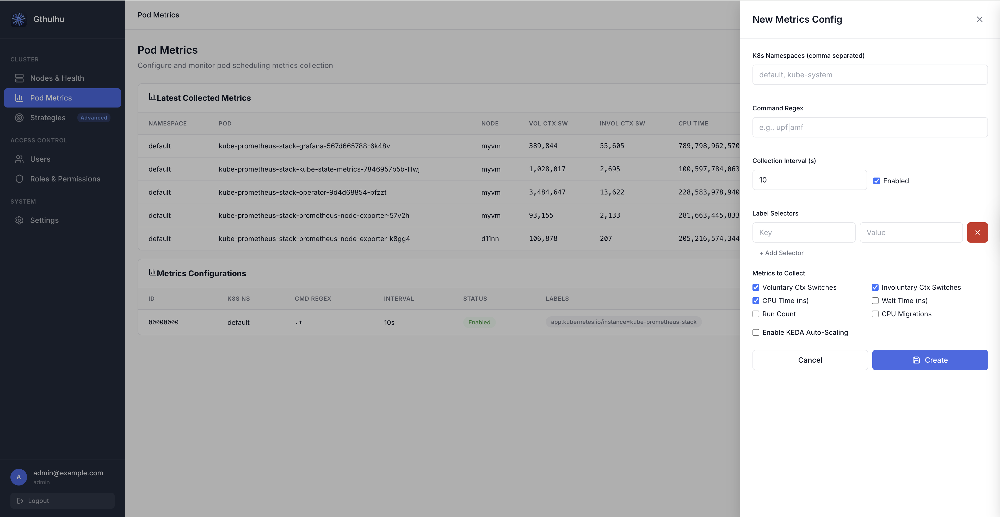
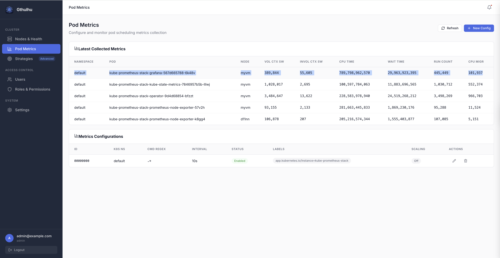

Pod 層級的排程指標
Gthulhu 提供由 eBPF 驅動的 Pod 層級排程指標，讓您在不修改應用程式程式碼的情況下，觀察叢集中每個 Pod 的底層核心排程行為。
概述
指標收集管線運作方式如下：
graph LR
A[核心 tracepoints
sched_switch / sched_process_exit] -->|per-PID 資料| B[eBPF hash map
task_metrics]
B -->|每 N 秒輪詢| C[Go Collector
+ PodMapper]
C -->|聚合為 per-Pod| D[Prometheus /metrics]
D --> E[Grafana 儀表板]
D --> F[KEDA 自動擴縮]
C -->|透過 API 查詢| G[Web GUI]
- eBPF tracepoints（
tp_btf/sched_switch、tp_btf/sched_process_exit）在核心層捕捉每個 PID 的排程事件。 - Go Collector 定期讀取 BPF hash map，並透過
/proc/<pid>/cgroup將 PID 對映到 Pod。 - 每個 PID 的指標聚合為 Pod 層級指標，並透過 Prometheus 和 REST API 公開。
可用指標
| 指標 | 說明 |
|---|---|
| 自願上下文切換（Voluntary Context Switches） | 任務主動讓出 CPU 的次數（例如 I/O 等待） |
| 非自願上下文切換（Involuntary Context Switches） | 任務被排程器搶佔的次數 |
| CPU 時間（ns） | 總 CPU 執行時間（奈秒） |
| 等待時間（ns） | 在執行佇列中等待的時間 |
| 執行次數（Run Count） | 任務被排程執行的次數 |
| CPU 遷移（CPU Migrations） | 任務在 CPU 核心之間遷移的次數 |
Prometheus 指標名稱使用 gthulhu_pod_ 前綴，例如：
gthulhu_pod_voluntary_ctx_switches_totalgthulhu_pod_involuntary_ctx_switches_totalgthulhu_pod_cpu_time_nanoseconds_totalgthulhu_pod_wait_time_nanoseconds_totalgthulhu_pod_run_count_totalgthulhu_pod_cpu_migrations_totalgthulhu_pod_process_count
所有指標帶有以下標籤：pod_name、pod_uid、namespace、node_name。
設定指標收集
您可以透過 Web GUI 或 PodSchedulingMetrics CRD 建立指標收集設定。
方式一：Web GUI

- 登入 Gthulhu Web GUI（存取方式請參閱設定排程策略）。
- 在側邊欄中點選 Pod Metrics。
- 點擊 New Config 開啟設定面板。
填寫以下欄位：
| 欄位 | 說明 |
|---|---|
| Label Selectors | 用於匹配目標 Pod 的鍵值對（至少需要一組）。例如 app=nginx。 |
| K8s Namespaces | 以逗號分隔的命名空間列表，限制收集範圍。留空表示所有命名空間。 |
| Command Regex | 用於過濾匹配 Pod 內行程的正規表示式。例如 nginx\|worker。 |
| Collection Interval (s) | 指標聚合和匯出的頻率（預設：10 秒）。 |
| Enabled | 啟用或停用此設定的開關。 |
| Metrics to Collect | 勾選要收集的指標。預設啟用自願上下文切換、非自願上下文切換和 CPU 時間。 |
儲存後，設定立即生效——每個節點上的 eBPF 收集器將開始追蹤匹配 Pod 的行程。
方式二：PodSchedulingMetrics CRD
如果您偏好宣告式設定，可以套用 PodSchedulingMetrics 自訂資源：
apiVersion: gthulhu.io/v1alpha1
kind: PodSchedulingMetrics
metadata:
name: monitor-upf
namespace: default
spec:
labelSelectors:
- key: app
value: upf
k8sNamespaces:
- free5gc
commandRegex: ".*"
collectionIntervalSeconds: 10
enabled: true
metrics:
voluntaryCtxSwitches: true
involuntaryCtxSwitches: true
cpuTimeNs: true
waitTimeNs: false
runCount: false
cpuMigrations: false
使用以下指令套用：
每個節點上的 CRD Watcher 會偵測到該資源，並動態更新 eBPF 監控範圍。
檢視執行時期指標
Web GUI

在 Pod Metrics 頁面，Latest Collected Metrics 表格會顯示即時資料：
| 欄位 | 說明 |
|---|---|
| NAMESPACE | Pod 命名空間 |
| POD | Pod 名稱 |
| NODE | Pod 所在的節點 |
| VOL CTX SW | 自願上下文切換 |
| INVOL CTX SW | 非自願上下文切換 |
| CPU TIME | CPU 執行時間（奈秒） |
| WAIT TIME | 執行佇列等待時間（奈秒） |
| RUN COUNT | 排程事件次數 |
| CPU MIGR | CPU 遷移次數 |
隨時點擊 Refresh 可取得最新資料。
REST API
您也可以透過程式化方式查詢執行時期指標：
# 列出所有指標設定
curl -H "Authorization: Bearer $TOKEN" \
http://localhost:8080/api/v1/pod-scheduling-metrics
# 取得最新收集的執行時期指標
curl -H "Authorization: Bearer $TOKEN" \
http://localhost:8080/api/v1/pod-scheduling-metrics/runtime
執行時期端點回傳的 JSON 回應如下：
{
"success": true,
"data": {
"items": [
{
"namespace": "free5gc",
"podName": "upf-pod-abc123",
"nodeID": "worker-1",
"voluntaryCtxSwitches": 15234,
"involuntaryCtxSwitches": 892,
"cpuTimeNs": 4820000000,
"waitTimeNs": 120000000,
"runCount": 16126,
"cpuMigrations": 47
}
],
"warnings": []
}
}
Prometheus 與 Grafana
指標透過 monitor 的 Prometheus 端點匯出（預設埠號 9090）。您可以：
- 將 Gthulhu monitor 新增為 Prometheus 抓取目標。
- 使用 Grafana 建立儀表板，視覺化各 Pod 的排程行為。
範例 PromQL 查詢：
# 每個 Pod 的自願上下文切換速率
rate(gthulhu_pod_voluntary_ctx_switches_total[5m])
# 過去一小時每個 Pod 的 CPU 時間
increase(gthulhu_pod_cpu_time_nanoseconds_total[1h])
# 非自願上下文切換最多的前 10 個 Pod
topk(10, rate(gthulhu_pod_involuntary_ctx_switches_total[5m]))
KEDA 自動擴縮整合
Pod 層級排程指標可以驅動 基於 KEDA 的自動擴縮。在建立指標設定時（透過 GUI 或 CRD），啟用 Scaling 區塊：
| 欄位 | 說明 |
|---|---|
| Metric Name | 用作觸發器的 Prometheus 指標（例如 gthulhu_pod_voluntary_ctx_switches_total） |
| Target Value | 觸發擴縮的閾值 |
| Scale Target Name | 要擴縮的 Deployment/StatefulSet 名稱 |
| Scale Target Kind | 資源種類（預設：Deployment） |
| Min Replicas | 最小副本數 |
| Max Replicas | 最大副本數 |
| Cooldown (s) | 擴縮事件之間的冷卻期（預設：300 秒） |
含擴縮設定的 CRD 範例：
apiVersion: gthulhu.io/v1alpha1
kind: PodSchedulingMetrics
metadata:
name: scale-on-ctx-switches
namespace: default
spec:
labelSelectors:
- key: app
value: my-service
collectionIntervalSeconds: 10
enabled: true
metrics:
voluntaryCtxSwitches: true
scaling:
enabled: true
metricName: gthulhu_pod_voluntary_ctx_switches_total
targetValue: "1000"
scaleTargetRef:
apiVersion: apps/v1
kind: Deployment
name: my-service
minReplicaCount: 2
maxReplicaCount: 20
cooldownPeriod: 300
擴縮路徑為：eBPF → Prometheus → Prometheus Adapter → KEDA ScaledObject → HPA → Pod 副本數。
先決條件
| 元件 | 需求 |
|---|---|
| Linux 核心 | 5.2+ 且啟用 BTF（僅收集指標不需要 sched_ext） |
| Gthulhu Monitor | 以 DaemonSet 方式部署在每個節點上 |
| Prometheus | 用於指標儲存與查詢 |
| Grafana | （選用）用於視覺化 |
| KEDA | （選用）基於排程指標的自動擴縮 |